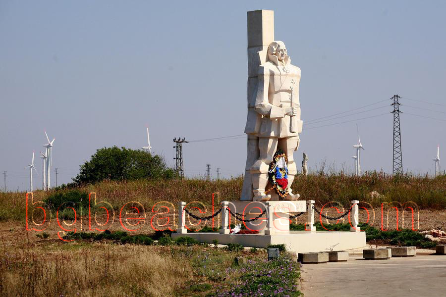

Monument
This is the monument of Fyodor Ushakov, the most illustrious Russian naval commander and admiral of the 18th century. It is believed that at Cape Kaliakra ended the Russian-Otoman war on 1787-1792 in which Fyodor Ushakov lead the Russian forces to victory. This is thought to be the greatest naval battle in the Black sea.
